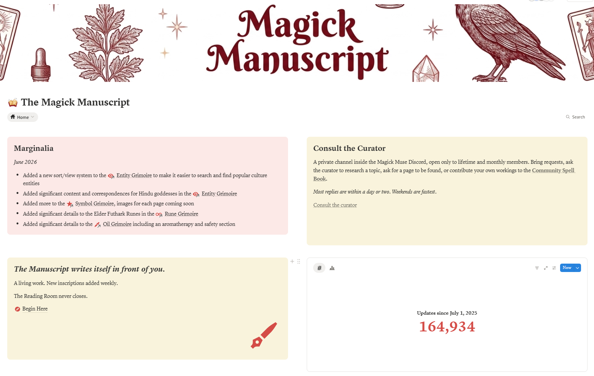
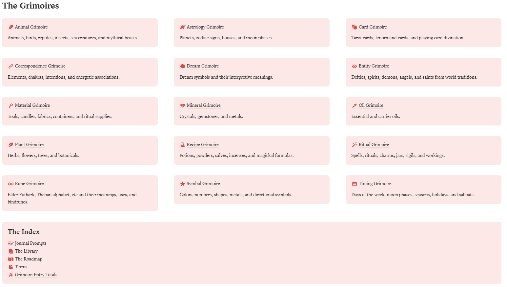
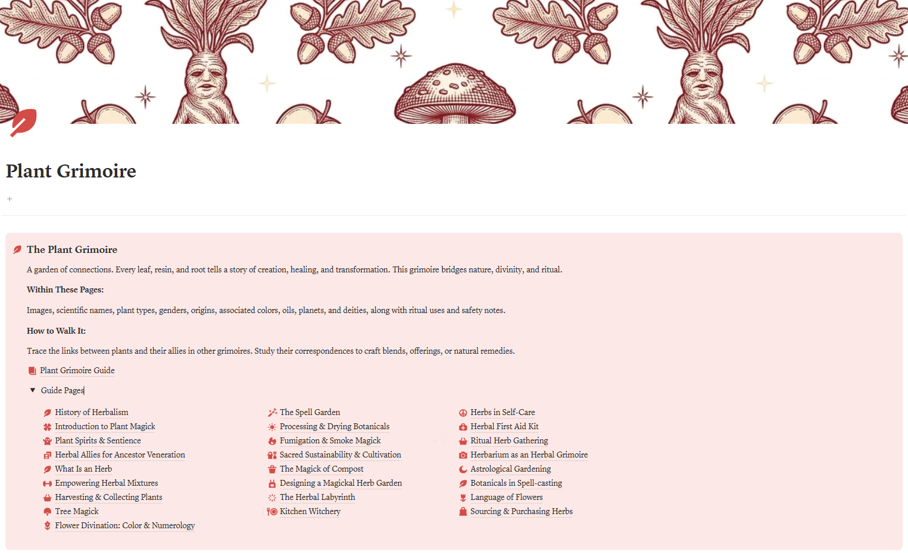
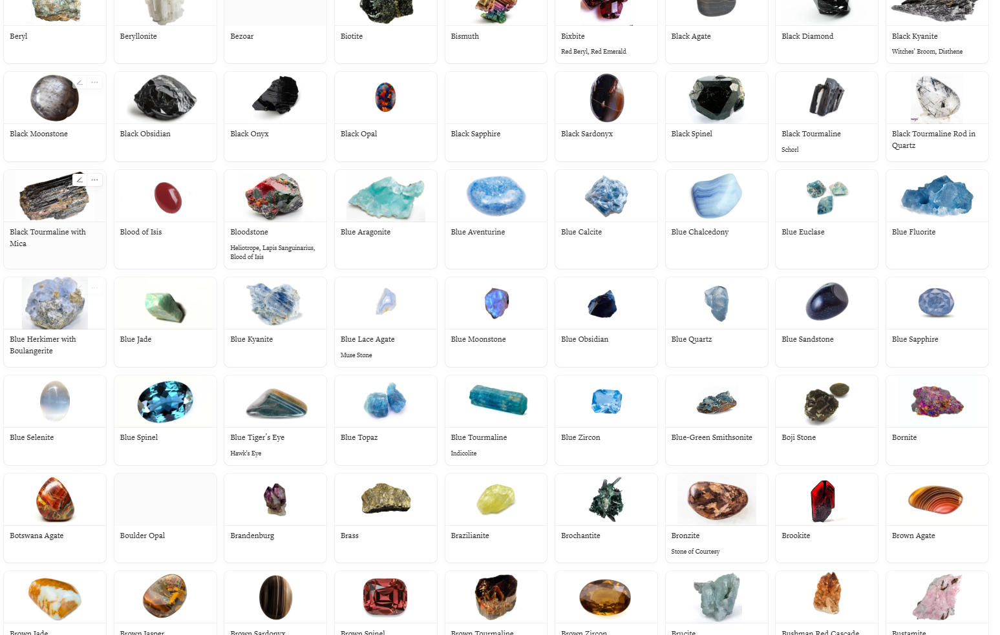
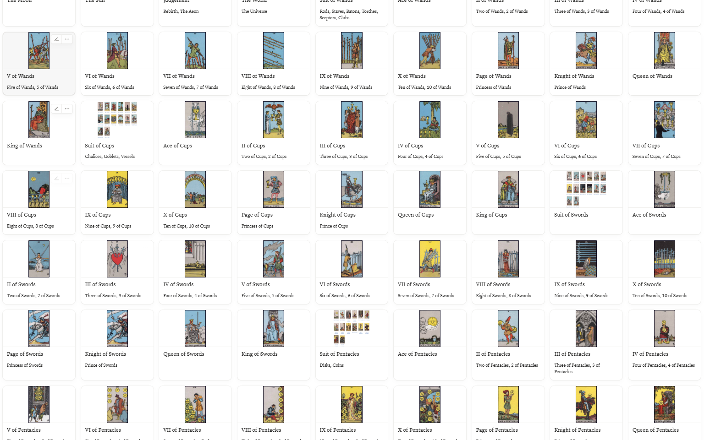
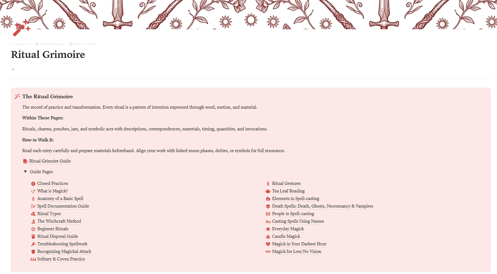
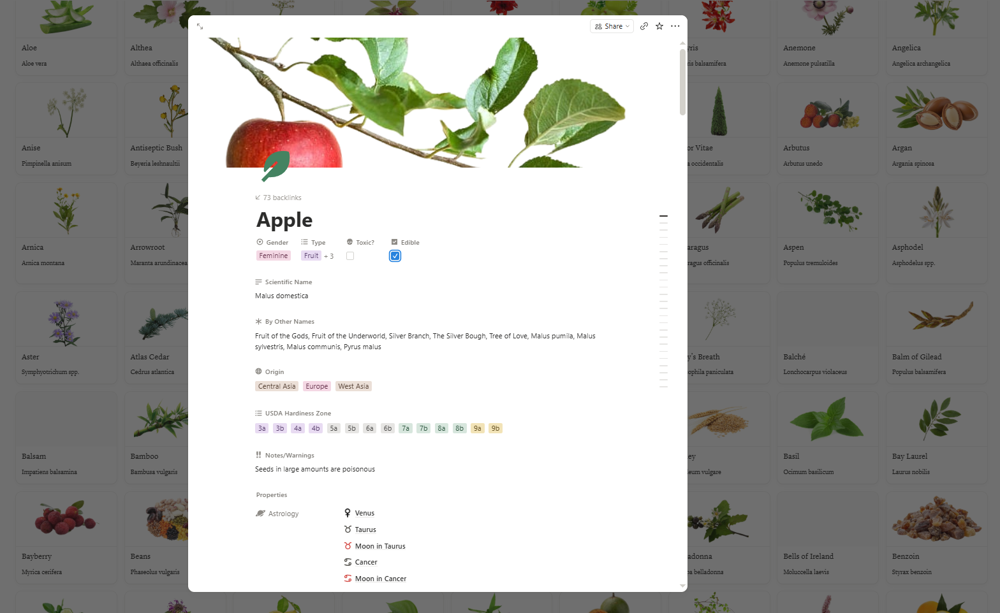
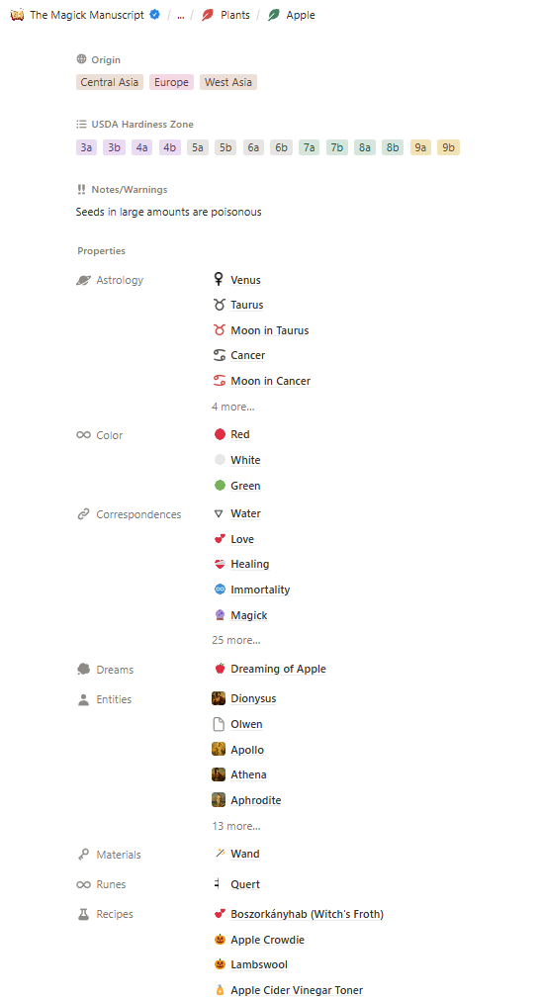
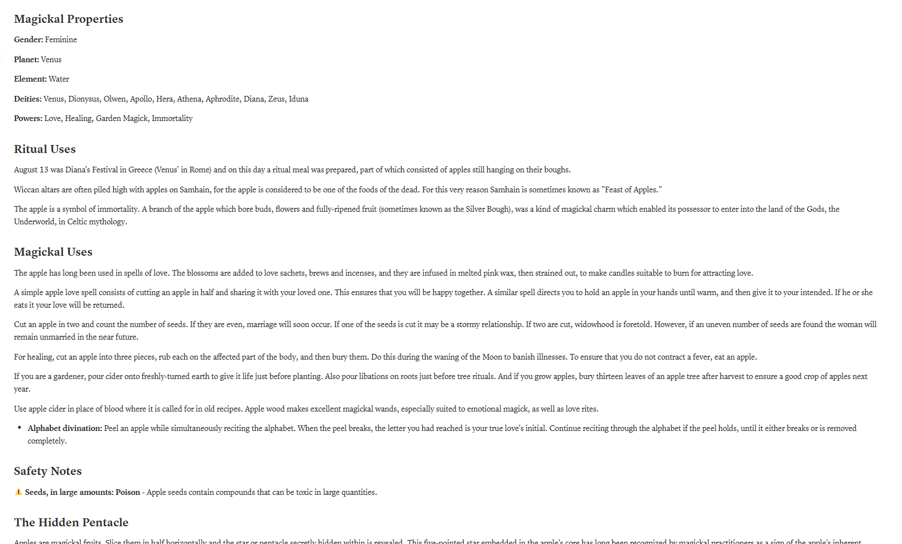

A Living Digital Grimoire
The Magick Manuscript
20,000 pages. 15 grimoires. One searchable system.

A living database. Built to grow with you.
The Magick Manuscript is a Notion-based digital grimoire built for serious practitioners. Every grimoire is cross-linked so that a crystal connects to its planetary ruler, which connects to its deity correspondences, which connects to ritual timing. Everything talks to everything else.
Peek Inside
A real look at the Manuscript
No guesswork. Here is exactly what you get when you open it.
Your home base: the dashboard and all 15 grimoires.




Each grimoire is its own illustrated world. Click to explore.








A glimpse inside one entry. Every page goes this deep.






Inside the Manuscript
15 Grimoires. One searchable system.
- 261 pages
Animals
animal symbolism, spirit guides & omens
- 132 pages
Astrology
planets, signs, houses & aspects
- 502 pages
Cards
tarot & oracle symbolism, spreads & reversals
- 1,684 pages
Correspondences
cross-linked correspondences across all categories
- 4,450 pages
Dreams
symbols, archetypes & interpretation
- 2,506 pages
Entities
deities, spirits & beings from diverse traditions
- 568 pages
Materials
candles, fabrics, metals & ritual materials
- 736 pages
Minerals
crystals, stones & minerals with properties & uses
- 295 pages
Oils
essential oils, blends & magickal applications
- 803 pages
Plants
herbs, flowers & plants with lore & correspondences
- 1,301 pages
Recipes
spell recipes, brews, incenses & ritual formulas
- 5,287 pages
Rituals
structured workings for every intention & occasion
- 139 pages
Runes
Elder Futhark meanings, divination & casting
- 470 pages
Symbols
sigils, sacred geometry & occult symbols
- 758 pages
Timing
moon phases, planetary hours, seasons & cycles
The Manuscript is for you if:
You are tired of scattered notes, lost bookmarks, and contradictory sources. You want one reliable system for everything.
You want to go deeper. Not surface-level content, but the kind of research that connects astrology to plants to deities to ritual timing.
You practice seriously: whether you are a seasoned witch or a thoughtful beginner who refuses to settle for a Google search.
What practitioners say
"Oh boy, I just opened the notion template a couple of hours ago!! WOW!! It must have taken forever to build, it's way more detailed than I was expecting. Very quickly fell down the rabbit hole. I even found info on things I didn't know I wanted to know. Definitely my #1 source for research and info from now on. Well worth the money. Thank you!!!"
GamingGranLiza
"The moon phase and sign is correct. I just bought my membership and logged in, and saw the moon widget. Checked it against my pro astrology app and it was precisely accurate to the degree, minute, and sign. I can't tell you how much that meant to me. I'm so happy and grateful for this. I feel blessed."
amDevine
"I bought the blank template and love it! It makes the process of studying so much easier and less intimidating."
Anonymous
"I have just started scratching the surface and already love your work so much! Something about how everything is SO interlinked makes my 'practically raised by tech' brain so happy, it just feels streamlined!!"
Blue Moth
Before You Decide
Questions, answered honestly
Do I need to know how to use Notion?
No. The Manuscript opens in Notion, which is free, and you do not need any prior experience. If you can use a website, you can use this. You will get a link and start exploring right away.
How do I get access after I buy?
You will receive a link from Notion at the email you purchased with, usually within 24 hours, since I add each person by hand. I am normally very quick. You get view and comment access to the Manuscript in Notion, which means you always see the latest version as it is updated, no extra steps needed.
Is it really updated, or is that just a tagline?
It is genuinely a living document. New entries and refinements are added continuously, and every future update is included in your access at no extra cost.
Is this for beginners or experienced practitioners?
Both. Beginners get a clear, trustworthy place to start without the misinformation that fills most witchcraft content online. Experienced practitioners get the depth, sourcing, and cross-linking to go further. You will not outgrow it.
Do you offer refunds?
Because this is a digital product you keep the moment you receive it, all sales are final. That is exactly why this page shows you real screenshots and answers your questions up front, so you can buy with confidence.
Where does the information come from?
Every entry is researched and compiled from reputable published sources, primarily books by established authors and scholars in witchcraft, folklore, and occult studies. The Manuscript includes a full citation page listing every book used, so you can always trace where the information comes from.
A living grimoire. One price.